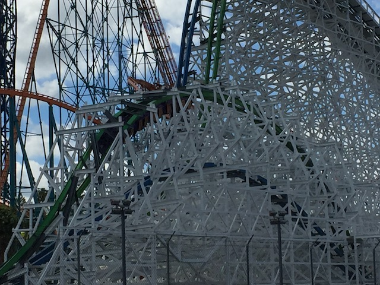
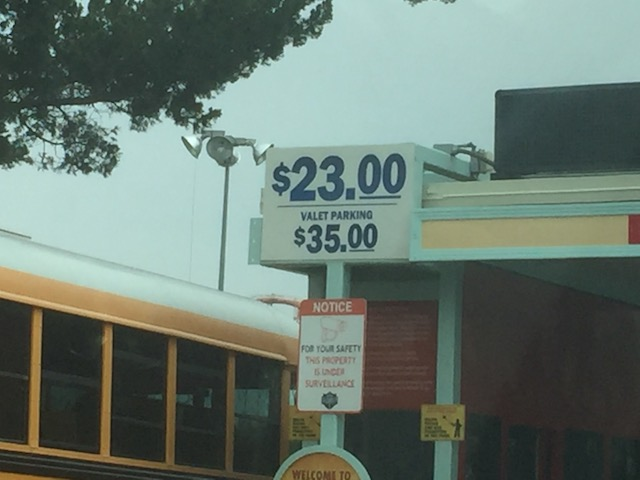
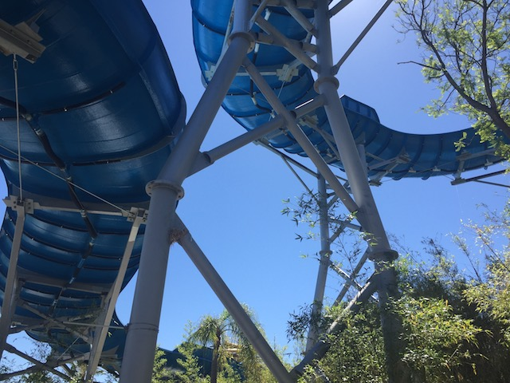
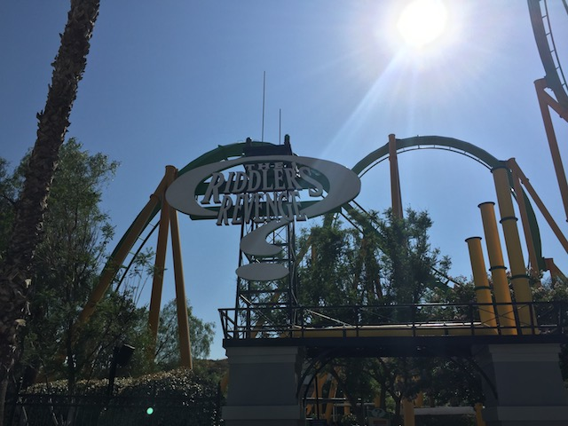
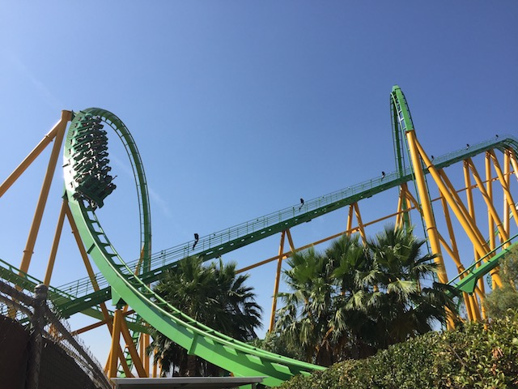
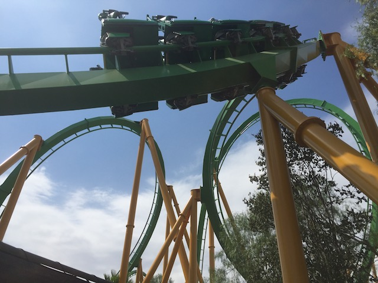
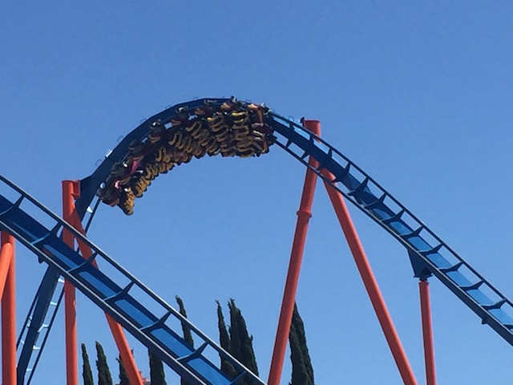
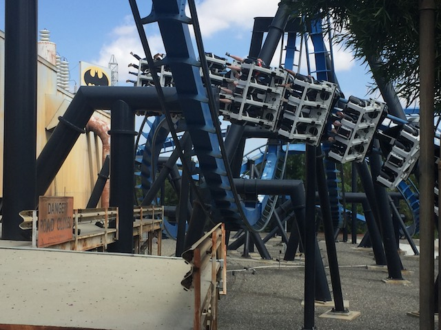
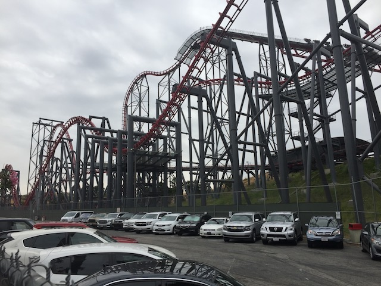

| |
Six Flags Magic Mtn Summer 2017
All right. Time for our annual Six Flags Magic Mountain summer update. While we didn't go to SFMM a ton this summer, we did manage to sneak in some updates from the Spring as well as from the Fall, ranging from April to September. So there's a decent amount of SFMM fun from these visits. OK. Visit #1. We're here meeting up with Shawn & Cliff for another fun SFMM day. Oh, and fun fact. Do you notice anything different about Lost Temple Rapids?
OK. We tried the new Galactic Attack VR on New Revolution since this was high priority for Shawn. Honestly, this new VR program isn't even that much different from their original VR program. Still was fun.
We're here at the park with Cliff. So of course, we're going to stop in the Full Throttle Sports Bar to drink beer. There's no question about that. That's happening.
*gasp* We have a Twisted Collosus virgin here with us! We have to fix that! Get your ass on board Shawn!

YAY!!! RMC AWESOMENESS!!!
Gee. Look at that old Metro building. It sure would be great if Six Flags were to build some sort of awesome flat ride in that spot. ;)
I'm deeply sorry Shawn. But Pistachio Park is closed. I know you came all the way from D.C specifically for that, but I'm sure we can make the trip good even without it.
Hey guess what!? I'm at SFMM with a couple of credit whores! You know what that means!? =)
Normally when I visit with credit whores, I'll stay off Speedy Gonzalas and just get photos of them humiliating themselves (or shoot video of themselves acting insane on the ride) since Speedy Gonzalas is a sh*tty kiddy coaster (even by kiddy coaster standards, this ride sucks) and is a one and done for me. But nope. When Cliff credit whores a ride, you're f*cking riding with him. There's no spectating that. He will not allow that. ;)
 And of course, we made sure to get lots of rides on Full Throttle in, since for some reason, this is Cliff's favorite ride.
And of course, we made sure to get lots of rides on Full Throttle in, since for some reason, this is Cliff's favorite ride.
 Wee! Hangtime!
Wee! Hangtime!
That's all folks! Thanks for spending yet another day at Six Flags Magic Mountain Incrediblecoasters. We really appreciate your presence! =)
Later that night for dinner, we decided to try the local So-Cal pizza chain, Pieology. Sure, it's not NYC or Italy pizza, but it's a really good chain with tasty pizza. Hope to eat here again.

All right. Onto Visit #2. WHAT!!? PARKING IS $23!!? WHAT A BARGAIN!! Since then, it's now gotten as expensive as $25. Though seriously, parking at SFMM is insanely expensive. It's now even worse than freaking Disneyland. Those parking passes pay for themselves SO quickly.
Sorry folks, but the Orient Express no longer goes uphill. So it's pointless now.
 I'm not sure if this is a popular thing to say or if it's just me, but honestly, I f*cking hate the new paint job for Riddlers Revenge. The funny thing is that I normally really like green and yellow paint jobs. Those two colors normally look really good together. But I really liked the faded minty green and black that Riddlers was. It just really suited the ride. And something about the green and yellow just makes it look TACKY AS F*CK!!
I'm not sure if this is a popular thing to say or if it's just me, but honestly, I f*cking hate the new paint job for Riddlers Revenge. The funny thing is that I normally really like green and yellow paint jobs. Those two colors normally look really good together. But I really liked the faded minty green and black that Riddlers was. It just really suited the ride. And something about the green and yellow just makes it look TACKY AS F*CK!!
 Well, Apocalypse is finally back from its retracking. Yeah, it's much smoother now, but it still has a little bit of a shuffle now.
Well, Apocalypse is finally back from its retracking. Yeah, it's much smoother now, but it still has a little bit of a shuffle now.
THE CANDY STORE IS CLOSED!!? NO!!!!!
*Sigh* Oh Six Flags Magic Mountain. It's May, and this is what Justice League currently looks like. When are you for once, going to open up a ride on time?
 I have no idea why we decided to ride Green Lantern today. But for some reason, we got it to flip. No really. For some strange reason, maybe we got the off-balancing just right, but it was running just like it was back when it first opened. Actually, it was running better than the majority of those rides! It honestly, was running on par with a mediocre ride on Insane @ Grona Lund. It was that crazy. Oh, whatever you do SFMM! PLEASE keep Green Lantern running like this, because this makes it one of the best rides in the park!
I have no idea why we decided to ride Green Lantern today. But for some reason, we got it to flip. No really. For some strange reason, maybe we got the off-balancing just right, but it was running just like it was back when it first opened. Actually, it was running better than the majority of those rides! It honestly, was running on par with a mediocre ride on Insane @ Grona Lund. It was that crazy. Oh, whatever you do SFMM! PLEASE keep Green Lantern running like this, because this makes it one of the best rides in the park!
 Well, as great as Green Lantern is running today and as happy I am to have it back to its old self again, it's still not as good as Twisted Collosus.
Well, as great as Green Lantern is running today and as happy I am to have it back to its old self again, it's still not as good as Twisted Collosus.
GET PUMPED UP! YOU'RE ON A FREAKING RMC YOU LUCKY SONS OF BITCHES!
Hey Cliff! The park is now selling fidget spinners! They know just how much you like those things. ;)
We were stumbling around the park all bored, when we decided to just do the Thomas...I mean Whistlestop Train because f*ck it! We forgot the ride existed.
Honestly, this ride was really good. It was nice, relaxing, and the guy running the ride was a total badass. I forgot what his name was if you enjoyed the ride, but if you had any complaints, his name was Chris. It was one of the uber rare times we went to Guest Relations to give this guy a compliment.
All right. Visit #3. This technically isn't a visit to Six Flags Magic Mountain, but rather, its adjacent water park, Six Flags Hurricane Harbor, which is a ton of fun as well.
Well, that straight slide on Python Plunge is still a lot of fun, even if I do miss Gator Gorge.

Hey look! They painted Lost Temple Rapids. It's now a very pretty shade of blue. =)
OK. Time to head outside the park for lunch. Oh, and this is why you don't text and drive boys and girls.
I keep forgetting about Five Guys due to the prices. But it's actually a really good burger joint. I gotta eat here more often.
TURTLE VS KOI FISH!!! FIGHT!!!
Eh, we're here. Might as well roam around the mall for a little bit.
Uh...I found the stuffed bread you guys. This just might be the weirdest stuffed...food item yet. Can someone find me the stuffed beef patty? I want to make a stuffed hamburger.
Hi old school SFMM Quilt patch!
Eh, Boa Constrictor & Sidewinder aren't that great. But hey. At least it's not Twisted Fang & Coiled Cobra.
 OK. It's been 2 years since we were able to do the Bonzai Pipelines. I keep forgetting just how awesome the regular straight down trap door slides are. =)
OK. It's been 2 years since we were able to do the Bonzai Pipelines. I keep forgetting just how awesome the regular straight down trap door slides are. =)
Sorry folks. But I've had it with working at SFMM! F*ck this! I quit! Walk the rest of the way on your own you lazy bums! Oh, and Visit #4.
LIE!! Goliath @ Six Flags Over Georgia does NOT go upsidedown! Shame on Six Flags for giving people the misconception that it does! BLASPHEMOUS!!! FAKE NEWS!!!
 OK. This was the reason I traveled back to the park. Justice League has FINALLY opened up, and it's time for me to get on it.
OK. This was the reason I traveled back to the park. Justice League has FINALLY opened up, and it's time for me to get on it.
I didn't go in with high expectations, since it's a mass produced dark ride being cloned all across Six Flags. But this ride is REALLY good. REALLY freaking good! It really reminded me of Toy Story Mania. I absolutely loved it.
I keep hearing from other enthusiasts that most of the Justice Leagues suck, but for some strange reason, the one at Six Flags Magic Mountain is actually really good. I'm not sure how true this is, but considering how good the SFMM one surprisingly is, I totally believe it.

Hey look! Now that Justice League finally opened up, Riddlers is also open as well.

It's great to be riding this thing again. Even if it is ugly as f*ck now.

Insert Ecuador by Sash here.
WHAT!? TIDAL WAVE IS OPEN!? WHAT THE HELL IS GOING ON HERE!!? I thought it would be closed forever!
Though remember. Riptide also opened up for a brief moment after being SBNO, only to then permanently close forever. So this doesn't kill any rumors of Tidal Wave leaving.
And finally, we're now on Visit #5. And Six Flags is advertising their new 2018 attraction, Crazanity. A: I'm very happy that they're getting a giant frisbee as that's exactly what they need. B: I CALLED IT!!!
Looks like we picked a good day to go to the park.

And of course, Scream is running great, as always.
 You know, this would be the star attraction at most other parks. But here, it's just another coaster.
You know, this would be the star attraction at most other parks. But here, it's just another coaster.

Hey, it may be a clone. But it's still good that Batman is everywhere.
♫Oh oh, I can't even take it in. Oh oh, I left my heart in Metropolis.♫
 OK. All the red on the Goliath trains is...I'm just gonna say it. I don't like it.
OK. All the red on the Goliath trains is...I'm just gonna say it. I don't like it.
 Goliath awesomeness.
Goliath awesomeness.
 In more good news, the VR from Revolution is temporarily gone, and won't be back until Holiday in the Park. I know I was kind of looking foreward to doing the Halloween Gargoyle program, but considering just how much the VR DESTROYS the operations, this is a net positive for the park and I'm happy they did this.
In more good news, the VR from Revolution is temporarily gone, and won't be back until Holiday in the Park. I know I was kind of looking foreward to doing the Halloween Gargoyle program, but considering just how much the VR DESTROYS the operations, this is a net positive for the park and I'm happy they did this.
Don't you wish lines were always like this when you visited an amusement park? Especially when they're on the best ride of the park? ;)

Even with all sorts of great new coasters popping up in California, X2 still remains my favorite in the state.
Hey look! We actually stumbled across a ride that actually has a line!
Hey you! Do you want to win these cool prizes, but don't have any money!? No problem! Just go into credit card debt and play all day long! =)
It's totally worth it! I'm not just Scooby Doo. I'm freaking Tie Dye Scooby Doo!!! =) Go into credit card debt to win me, and I will ruv you forever. Oh, and be sure to take out a roan from your rocal bank to pay for my Scooby Snacks.
Yeah. Tatsu has a line, but it almost always has a line, we've ridden everything else, and we rarely ride it. Screw it! Let's wait for Tatsu. All right. That was our Six Flags Magic Mountain Summer update. It was a lot of fun, and I'm looking foreward to checking out the park for Fright Fest.
Home
|